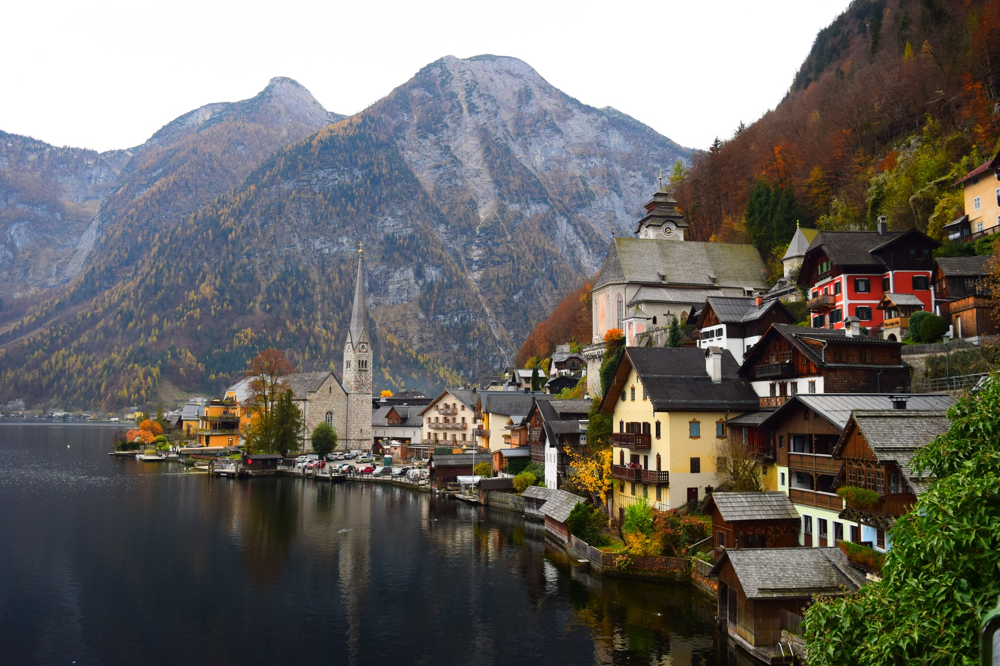

Österreich ist ein mitteleuropäischer Binnenstaat mit rund 8,9 Millionen Einwohnern. Die angrenzenden Staaten sind Deutschland und Tschechien im Norden, die Slowakei und Ungarn im Osten, Slowenien und Italien im Süden sowie die Schweiz und Liechtenstein im Westen.  Österreich ist ein demokratischer und föderaler Bundesstaat, im Besonderen eine semipräsidentielle Republik. Seine großteils aus den historischen Kronländern hervorgegangenen neun Bundesländer sind das Burgenland, Kärnten, Niederösterreich, Oberösterreich, Salzburg, die Steiermark, Tirol, Vorarlberg und Wien. Das Bundesland Wien ist zugleich Bundeshauptstadt und auch einwohnerstärkste Stadt des Landes. Weitere Bevölkerungszentren sind Graz, Linz, Salzburg und Innsbruck. Das Land wird von der Böhmischen Masse und der Thaya im Norden, den Karawanken und dem Steirischen Hügelland im Süden, der Pannonischen Tiefebene im Osten sowie dem Rhein und dem Bodensee im Westen begrenzt. Mehr als 62 Prozent seiner Staatsfläche werden von alpinem Hochgebirge gebildet.
Wikipedia